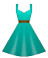
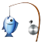

Välkommmen till mitt portfolio.
Jag heter Camilla Borg och är snart färdigutbildad FrontEnd Utvecklare på Nackademin. Gillar att arbeta med presentationslagret av webbplatser då det kräver både kreativitet i design och tänk! Mitt mål när jag utvecklar är alltid spännande design, härlig funktionalitet, interaktion och responsivitet för alla olika enheter.
- HTML
- CSS
- SASS
- Responsive Design
- jQuery
- Javascript
- Wordpress
- Gulp
- Git
- Flexbox
- Stylus
- MySQL
- PHP
- Photoshop
- React
- Monterosa
- Praktikant Frontend Utvecklare
- Stockholm, Sverige
- September 2015 - December 2015
Var med i ett projekt som byggdes i React. Detta har gett mig en djupare kunskap inom Javascript och förståelse för att bygga dynamiska webbsidor och i komponenter för att sedan kunna använda på ett bra sätt.
Mina kunskaper inom HTML och CSS har självklart ökat och fick prova att skriva stylingen i Stylus. I alla projekt har vi arbetat med Git och Gulp. Efter min praktik på Monterosa har jag fått en bra insikt hur det är att arbeta som utvecklare och fått en viss insikt i hur de arbetar med projekten, i tillexempel olika ramverk och rutiner.
- Åhléns 
- Säljare
- Stockholm, Sverige
- 2010 - Nuvarande timanställning
Jag har varit anställd på Åhléns 6 år. Arbetade 3 år på Åhléns Täby Centrum som säljare på avdelning Hem/Media med ansvar för glas/porslin. Började sedan arbeta för Åhléns Sundbyberg som säljare med ansvar för avdelning Leksaker.
Huvudsakliga arbetsuppgifter har varit kassa, varuexponering enligt koncept och stor fokus vid kundkontakt och sälj. Gick en kort intern säljutbildning. Arbetade extra på helger på Åhléns i Täby Centrum samtidigt som jag studerade.
- Riddarbageriet & Rivalbageriet
- Barista & Butikssäljare
- Stockholm, Sverige
- 2010 - 2011
Arbetade för Riddarbageriet på Östermalm, Stockholm och Rivalbageriet vid Mariatorget, Stockholm. Där hade jag arbetsuppgifter från beställning av varor och försäljning till kassahantering. Då det var stressigt och fartfyllt arbete krävdes stor organisationsförmåga.
- Lax-á Sportfiske 
- Hotellpersonal
- Hella & Hvolsvollur, Island
- Säsongsarbete sommaren 2008 & 2009
Efter studentexamen arbetade jag för ett företag som heter Lax-á på Island. Där arbetade jag i ett team med mycket varierade arbetsuppgifter. Genom detta arbete lärde jag mig mycket om service, arbeta i team och lösa många situationer på egen hand som uppstod i arbetet. Då det var en daglig vana att prata engelska är detta inget hinder.
Ahaaa! Du vill veta mer om mig, kul!
Jag heter som sagt Camilla, är 26 år och bor strax utanför Stockholm.
När jag inte hänger vid datorn och kodar spenderar jag mycket tid och pengar på konserter och festivaler. Jag nördar gärna ner mig i allt som har med hårdrock att göra.
Annars gillar jag att sjunga, laga mat, spela sällskapsspel och umgås med vänner och familj.
Jag är inte den tjejen som kodat sen jag var 5 år. Jag är inte heller någon gamer. Jag halkade in i programmeringsvärlden av ren nyfikenhet.
Jag blev intresserad när jag läste om att Frontend handlar om att arbeta med presentationslagret av webbplatser. Att få webbplatser att vara användarvänliga men även vara spännande genom bra funktionalitet och snygg design lockade mig till att läsa till webbutvecklare.
Amado Agency
Utvecklat ett tema för Amado Agency i Wordpress.
Ville lära mig något nytt och pga detta har jag använt mig av ACF (Advanced Custom Fields) vilket var roligt och lätt att arbeta med. Även använt lite Flexbox för layout och positionering på sidan.
- Wordpress
- ACF
- jQuery
- Flexbox
- HTML & SASS
- Gulp
Wordpress tema - Arkitektur
Utvecklat ett wordpress tema från grunden som exmamensarbete för min utbildning tillsammans med Emma Berglund. Eftersom Wordpress används som CMS på många webbplatser anser vi att det är en viktig kunskap att ha som Front End Utvecklare.
- Wordpress
- MAMP
- jQuery
- HTML & SASS
- Git/SourceTree
MovieSearcher - API från OMDB
Projekt som gjordes under kurs i JavaScript. Skapade en applikation där användaren ska kunna skriva in en film och få reda på mer information om filmen.
Använde mig av AJAX genom ett API from OMBD (Open Movie Database). Prova själv, men just nu fungerar ej att söka på svenska filmer.
- Javascript
- AJAX
- HTML & CSS
Spel - Friend Or Fraud
Friend Or Fraud är ett sällskapsspel som jag skapade tillsammans med Mikaela Grundin och Emma Berglund. Man kopplar upp sig med sina mobiler och får sedan tävla om vem som kan mest om varandra.
- Angular
- Firebase
- Javascript
- HTML & SASS
- Git/SourceTree
- Gulp
Spel - Quiz Me Quick
Jag har tillsammans med Emma Berglund utvecklat Quiz Me Quick! Ett spel som går att spela i webbläsaren. Ifrån vilket film kommer klippet? Man har tio sekunder/klipp och varje omgång är totalt 5 klipp.
Vi byggde i princip hela spelet i JavaScript och skapade en JSON-fil där vi hämtade all data ifrån. Vi stylade spelet genom favoriten SASS. Framtida planer: Fler genres, fler klipp och även försöka få till någon slags nedräkning av tid under spelet. Och självklart göra det responsivt!...
- Javascript
- JSON
- AJAX
- HTML & SASS
Infographic - Swedish Metal Evolution
Jag har skapat en Infographic som ska visa hur musikgenren 'Svensk Metal' vuxit fram från hårdrockens början. Syftet är redovisa information på ett fängslande sätt och i ett format som tillåter struktur, presentation och interaktion.
Under projektet undersöktes många olika 'ramverk' för animationer. Jag har använt mig av 'scrollReveal.js' och lite jQuery. Informationen träder fram på sidan under tiden man scrollar nedåt. Använt mig av Skeletons gridsystem, så ska även fungera bra på tablet och mobil.
- scrollReveal.js
- jQuery
- HTML & SASS
- Skeleton
- Photoshop